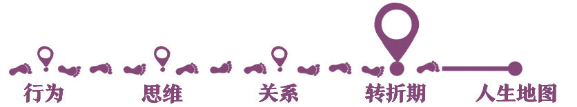

欢迎来到自我发展心理学。
你好，我是陈海贤。
从这一讲开始，我们会进入一个新单元——转折期。
首先，我想问你一个问题：还记不记得，你上次人生的重要转折，发生在什么时候？
那时候你是刚走出校园，到一个陌生的公司上班？
还是放弃了别人觉得不错的工作，开始了新的职业探索？
你是结束了单身，开始经营自己的婚姻和家庭，还是离开了相爱已久的恋人，重新开始了一个人的生活？
你是找到了一个让你激动的梦想，还是放弃了一个奋斗已久的梦想？
你还记不记得，你是怎么经历了这些转变，才变成了今天的你自己？
记忆总是很容易把过去整理成一条平顺的、符合逻辑的曲线，让我们误以为自我的转变也是一个连续的、缓慢的、渐进的过程。
其实并不是。
在现实生活中，自我发展常常需要经历很多跨越式的转变，这个过程伴随着剧烈的变动和强烈的不安。
就好像，在某些时刻，你发现自己越过了生命中一条神秘的红线，到了某一个你从未到过的新的领域。你熟悉的旧生活已经过去了，而你想要的新生活还没到来，你被留在新旧交替的关口，茫然无措。
这就是我们在这一单元想要讲的转折期。
为什么要讲转折期
为什么在一门自我发展心理学的课里，要讲人生重要的转折期呢？
首先，当然是因为它重要。
你经历了什么样的转折期，你又是如何度过这些转折期的，很大程度上决定了你是一个什么样的人。
如果有这样一个人，他一生都发展平顺，从没经历过什么挣扎和难事，那他很可能会变成一个特别平面和肤浅的人。
每一个转折期，都在更新你对世界和自我的认识，都在考验你的意志和精神，都在给你的自我增添新的内容。
所以，怎么经历和度过转折期，就是自我形成和发展的重要组成部分。
其次，我想通过转折期的讲解，更新你对自我的理解。
我希望你能把自我放到一个不断发展和转变的进程中，用发展的视角来看待自我，而不是用静止的视角来看自我。
在日常生活中，我们习惯用各种固定的个性标签来形容自己。比如我敏感、内向、自卑等等，这是一种静止的视角。
那什么是发展的视角呢？
很简单，就是你要看到，人是会变化的。在转变的不同阶段，人的心理状态并不一样。在某些重要的转折期，心理的变化尤其剧烈。
所以，消极的心理状态很可能是变化的特性，而不是自我的特性。
举个例子。
经常有朋友跟我说，自己被医院诊断为抑郁症，这给他们带来很大的心理压力。
抑郁症给他们带来的困扰，除了情绪问题本身，还有“抑郁症”这个标签所包含的沉重的含义：我病了，从此我不是一个正常人了。这是一种静止的视角。
那用发展的视角看自我会怎么样呢？
当我看到一个人抑郁的时候，我会想：这个人一定在经历人生的某些重要转变。如果他的抑郁很重，那也许是这个转变的过程特别重要，因此也特别艰难。如果他的情绪持续了很长的时间，那也许是他在这个转变的过程中在哪里被卡住了。
这就是发展的视角：不是他有问题了，而是他在这个转变的过程中出了问题，他是被卡住了，才有了抑郁的情绪。
这样的视角会带来很多的好处。心理学大师米纽庆曾讲过这么一个案例：
有一个年近七旬的老太太，在一个公寓里住了二十五年。有一天，她发现家里失窃了，就找了一家搬家公司搬家。
可是搬家后，她总觉得那些搬东西的工人试图监控她。他们故意把贵重的东西放错地方、弄丢，还在她新家的家具上留下邪恶的标记——密码（其实那是搬家公司给家具做的标记）。当她外出时，人们就跟踪她，并且相互发暗号。
她去看了精神科医生，精神科医生觉得她精神有问题，出现妄想了，于是给她配了些药。
但她不想吃这些药，觉得这些医生故意用这些药来害她。于是，她找到了另一个心理咨询师。这个咨询师倒是没提精神问题的事，只是跟她解释说：
“你现在处于一个特殊的时期。你失去了原先的壳——你以前的家，熟悉的物件和熟悉的街区和邻居。现在，你就像脱壳的甲壳类动物一样很容易受伤。只有当长出新壳来，才会好转。”
咨询师跟她讨论怎么缩短长出新壳所要花费的时间。她们一起想了很多办法，比如：
把新房子装饰得跟原来的公寓相似；让她的生活变得更规律些。咨询师还建议她，不应该期望两个星期内就能在新的地方交到朋友，这不符合新壳的生长规律。
她应当去拜访老朋友。但为了不给朋友和家人造成负担，她应该不要叙述她疑神疑鬼的经历。如果有人打听，就说这些只是糊涂且容易害怕的老年人问题。
当然精神科医生做出诊断有他的依据，有些情况下，精神分裂症也确实需要吃药。可是，在这个老太太的案例中，心理咨询师那个“新壳”的比喻，却把她的情绪放到了自我发展的进程中来理解。
一个孤独的老太太，需要的不是一个类似“妄想”这样的标签，而是希望和出路。而关于换壳这样的隐喻，帮助她找到了这样的出路。
这就是用发展的眼光来看自我的好处。
这个换壳的比喻，会特别自然地让我们重新开始思考自我发展了。
转折期的第三个意义，是更新你对自我发展的理解。
在咨询中，我常会这样对来访者说：人就像某些动物一样，长大到一定程度，它们需要把原有的壳脱掉。
这个脱壳的过程是很痛苦的。那它们为什么要脱壳呢？因为这个旧壳已经限制了它们。如果它们一直背着那个旧壳，就没有办法继续生长。
你可以把这个旧壳理解为是旧的工作、旧的关系、旧的习惯。
自我的发展，也需要经历很多次这样的脱壳，这同样会给我们带来痛苦和迷茫。但这不是自我的问题，恰恰是自我发展需要经历的道路。
在这里，我们一起回顾一下前面的课程。
第一单元所理解的自我发展，是通过新行为创造新经验的过程。
第二单元所理解的自我发展，是通过接触现实创造新思维的过程。
第三单元所理解的自我发展，是通过分清你的和我的，来构建新关系的过程。
在这一单元转折期，我们所理解的自我发展，是通过自我的打碎和重构，从旧阶段过渡到新阶段的过程。
这个阶段的变化，常常孕育着新经验、新思维、新关系的产生，它是转变的综合，也常常伴随着更强烈的情绪波动，会持续更长的时间。它不是一种发展的量变，而是一种发展的质变。
怎么理解这种质变呢？
蝌蚪会慢慢长大，这是一种量变。可是有一天，蝌蚪脱去了尾巴，变成了青蛙，这就是一种质变了。虽然青蛙是从蝌蚪发展过来的，但青蛙不是长大了的蝌蚪。
同样，也许你在工作中每天也在接触新的东西，偶尔也会想是不是去创业会更好；或者你在关系中也会跟爱人闹闹情绪，有时候也会怀疑是不是彼此不合适。
可当你真正决定辞职创业或者分手的时候，还是会很不一样。生活的转折期，就是这样一种质变。
有人说，从旧阶段向新阶段过渡的过程，很像死亡和重生。就是我们自我中那些受限制的、老朽的部分，在转变中慢慢死去了，但是新的自我又在这种变动中生长起来了。
我们的自我就在一个个转变的过程中不断成长更新，逐渐变得丰富起来。
转变并不一定带来了世俗意义上的更好的生活。有些人会安慰你：失恋了，你会找到更好的伴侣；离职了，你会找到更好的事业。
如果你运气好，这也是经常会发生的事。但是如果从这个角度来理解转变，就太功利了。
转变的本质，不是外在的新旧更替，而是自我重构的过程。
如果我们顺利地度过了这个阶段，完成了自我的重构，我们的心里会生出一些深沉的智慧、深度和复杂性，我们会对自己有更多的了解，我们会理顺我们和自己的关系，会变得更加坚定而无所畏惧。
在接下来的课程中，你会听到：人该怎么经历和度过这些转折期。
我会讲到转折期的三个不同阶段：结束、迷茫、重生；
会讲到对自我发展影响最大的三种转变：工作的转折、关系的转折和创伤后的转折。
最后，我想用一个故事来结束这一讲的课程。
据说在原始部落里，存在着一些神秘的转变的仪式，其中有一个仪式是这样的：
晚上的篝火旁，原始部落的村民们围着一个将要成年的青年唱歌跳舞。
部族的长老为他唱部落的圣歌，用镰刀在他脸上留下两道伤疤，这两道伤疤象征着生活的残酷。然后，这个年轻人就要离开部落，去森林里流浪。
他没有身份、没有家人、没有部落，有的只是他自己，去独自面对存在本身。
两个月后，他会以新的身份重新回到村庄，脸上的刀疤会变成成人的标记。
那个以前的少年已经死了。作为象征，他的父母会将他从小到大睡过的席子扔到火里烧掉。当他再回来的时候，他已经不是那个孩子了。
最开始的一段时间，他不会再去认他的父母。他会记不得原来熟悉的事情，他们会给他取一个新名字。少年的时光已经变成了遥远的记忆，部族的长老会带着他完成这样的转变，直到他习惯自己完全变成了一个新的生命。
我们的生活里虽然没有这样的仪式，可是，你也在经历这样转变的过程：脱离部落，去荒野寻找自我，最后以一个新的身份回来。
从下节课开始，就让我们一起这段转变的旅程。
我们下节课见。